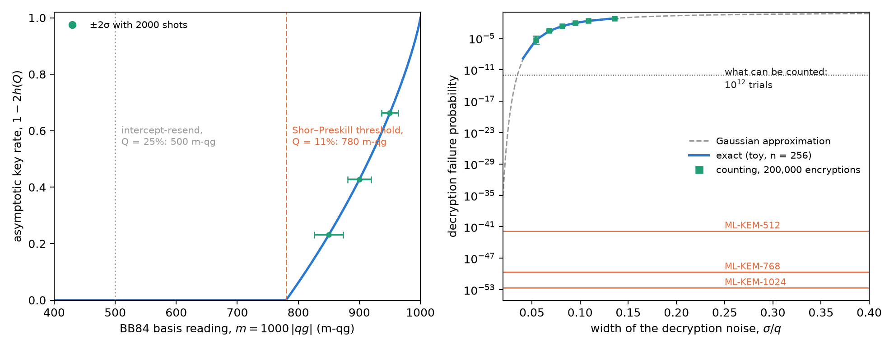
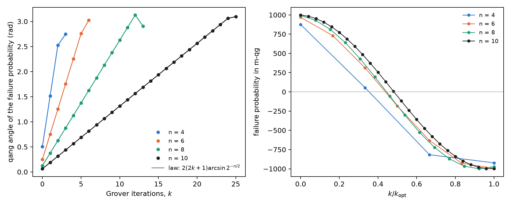
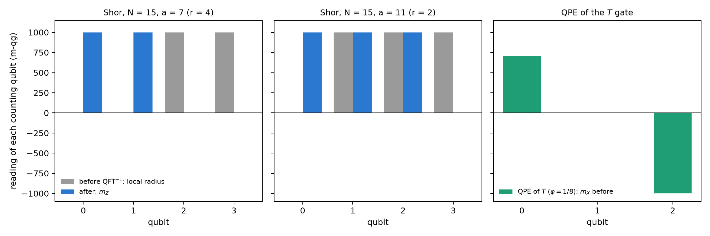

16 Demarcation: quantum cryptography against post-quantum cryptography (PQC)
Part VI is about security. Before reading quantum key distribution (Chapter 17) and certified random numbers (Chapter 18) in qg, it is worth drawing the border. There are two answers to the quantum computer that share the word “quantum” and little else. Quantum cryptography (QKD, QRNG) uses qubits: its security rests on a physical measurement, and so it enters the probability equation of Chapter 1. Post-quantum cryptography (PQC) is classical software that runs on ordinary computers: its security rests on the hardness of a mathematical problem, and there is no qubit to read. This chapter says where the line runs, with numbers, and what qang reads on each side.
16.1 From the base: which probabilities exist on each side
Any probability \(p_0\) enters the equation of Chapter 1: it has qang angle \(\theta=2\arccos\sqrt{p_0}\) and reading \(m=1000(1-2p_1)\) m-qg. The question is not whether it can be written down, but whether the reading says anything.
- In QKD, the probability that decides security is the quantum bit error rate (QBER) of a measurement in one basis. It is the probability of a qubit, and its reading is the one of Chapter 17: \(Q=(1-|qg|)/2\), that is, \(m=1000\,|qg|=1000(1-2Q)\).
- In PQC, the only probability in the scheme is that decryption fails, \(\delta\). For ML-KEM, the FIPS 203 standard bounds it by \(2^{-138.8}\), \(2^{-164.8}\) and \(2^{-174.8}\) for the three levels. Written in m-qg it is \(m=1000-3.3\times10^{-39}\) at best: it sits against the pole, and there is no Hermitian operator, measurement basis or Bloch sphere behind that number.
The security of PQC, moreover, is not that probability: it is the hardness of a lattice problem (module learning with errors, MLWE), which is not the frequency of anything. That is the demarcation in one line: qang reads probabilities of measurements; PQC has no measurements.
16.2 The nature of PQC
NIST’s standards of August 2024 are three: ML-KEM (FIPS 203, formerly Kyber), a lattice key-encapsulation mechanism; ML-DSA (FIPS 204, formerly Dilithium), lattice signatures; and SLH-DSA (FIPS 205, formerly SPHINCS+), signatures built only on hash functions. In 2025 HQC, based on error-correcting codes, was also chosen as a second key mechanism. All of them are integer arithmetic: polynomials modulo \(q=3329\) in ML-KEM, hash trees in SLH-DSA. None of them prepares a state, applies a gate or measures.
In ML-KEM, decrypting is subtracting and rounding: the message survives if an accumulated noise (the sum of many products of small coefficients) stays within \(\pm q/4\). If not, decryption fails. That is the \(\delta\) above.
16.3 Decryption failure is counted, not measured on a qubit
To see what qang would do with \(\delta\), the figure script builds a toy scheme with the same mechanism: noise \(e=\sum_{i<2n}a_ib_i+c\) with \(a_i,b_i,c\) from ML-KEM’s centred binomial distribution, \(n=256\), \(q=3329\), without the standard’s compression (which in ML-KEM accounts for most of the failure), and with the width \(\eta\) as the knob. The failure probability is computed exactly (a convolution modulo \(q\)) and counted over 200,000 simulated encryptions.
| \(\eta\) | \(\sigma/q\) | exact failure | counted | reading (m-qg, 95% CI) |
|---|---|---|---|---|
| 16 | 0.054 | \(5.1\times10^{-6}\) | 1 of 200,000 | 1000.0 [999.9, 1000.0] |
| 20 | 0.068 | \(2.5\times10^{-4}\) | 60 | 999.4 [999.2, 999.5] |
| 24 | 0.082 | \(2.2\times10^{-3}\) | 437 | 995.6 [995.2, 996.0] |
| 32 | 0.109 | \(2.2\times10^{-2}\) | 4360 | 956.4 [955.1, 957.7] |
| 40 | 0.136 | \(6.6\times10^{-2}\) | 13,072 | 869.3 [867.1, 871.4] |
The count agrees with the exact sum, and qang.probability.analyze reads it in m-qg with its interval. But that reading is the Wilson proportion in another unit: there is no angle of a state behind it. And no count reaches where real PQC lives (Figure 16.1, right). Seeing a single ML-KEM-512 failure takes on the order of \(1/\delta\approx6\times10^{41}\) decryptions; with \(10^{12}\) trials, about the most one can count, the floor sits 30 orders of magnitude above. The shot rule of Chapter 1 says the same in m-qg: next to the pole, \(\sigma_m\approx2000\sqrt{\delta/N}\), and to bring it below the offset \(2000\,\delta\) one needs \(N>1/\delta\). PQC’s \(\delta\) is proved, not measured.

On the other side of the line (Figure 16.1, left), the quantity that decides BB84’s security sits in the middle of the scale. The Shor–Preskill asymptotic rate, \(1-2h(Q)\), vanishes at \(Q=11.0\%\), which is \(m=780\) m-qg; intercept-resend gives \(Q=25\%\), \(m=500\). With 2000 shots, \(\sigma_m\) is 11.8, 9.7 and 7.0 m-qg at 850, 900 and 950 m-qg: the margin to the threshold is resolved comfortably. It is the probability of a qubit, readable and with an error bar; Chapter 17 uses it to separate the eavesdropper from the noise.
16.4 The quantum attack vector: Grover
The quantum computer is quantum, and its attacks do enter the base. Grover’s attack on an \(n\)-bit key has, after \(k\) iterations, failure probability
\[ p_{\text{fail}}=\cos^2\!\big((2k+1)\,\beta\big),\qquad \beta=\arcsin 2^{-n/2}, \]
which is the probability equation with qang angle \(2(2k+1)\beta\): each iteration advances the qang angle by \(4\beta\), in a straight line. This was checked with the circuits of qang.algorithms for \(n=4\), 6, 8 and 10: the angle of the exact probability matches the law to \(10^{-10}\) rad (Figure 16.2). In m-qg, the failure goes from +1000 to −1000 along a cosine and crosses the equator (success 1/2) halfway.

For AES-128 the step is \(4\arcsin2^{-64}=2.2\times10^{-19}\) rad per iteration, and reaching the pole takes \(1.4\times10^{19}\) serial iterations, each a full AES circuit; for AES-256, \(2.7\times10^{38}\). PQC’s answer to this attack is to double the symmetric key length, and the geometry explains it: the angle advances as \(2^{-n/2}\), so Grover halves the security bits and nothing more.
16.5 The quantum attack vector: Shor and phase estimation
The attack that breaks RSA and elliptic curves, and that PQC sidesteps, is Shor’s algorithm: phase estimation (QPE) on modular multiplication. The notes (§13) show that QPE recovers exact phases, and the book’s index said that “the eigenstate register projects onto \(qg_Z=-1\) without resolving the phase”. That holds for the QPE of an eigenstate, and the exact computation of this chapter says how far a qg reading goes in Shor’s case (Figure 16.3).
QPE of an eigenstate. With the \(T\) gate on \(|1\rangle\) (\(\varphi=1/8\)), the target register stays at \(m_Z=-1000\) and carries no information: the phase lives in the counting register. There, before the inverse QFT, qubit \(k\) has \(m_X=1000\cos(2\pi2^k\varphi)\): 707, 0 and −1000 m-qg. Each qubit carries one bit of the phase in its qang angle, which is Kitaev’s iterative phase estimation.
Shor for \(N=15\). The work register is not in an eigenstate but in a superposition of the \(r\) eigenstates, and the counting qubits end up entangled with it. With four counting qubits:
| case | local radius of each counting qubit, before (m-qg) | \(m_Z\) of each qubit, after | outcomes |
|---|---|---|---|
| \(a=7\) (\(r=4\)) | 0, 0, 1000, 1000 | 1000, 1000, 0, 0 | 0, 4, 8, 12 |
| \(a=11\) (\(r=2\)) | 0, 1000, 1000, 1000 | 1000, 1000, 1000, 0 | 0, 8 |
| \(N=21\), \(a=2\) (\(r=6\)), six qubits | 0, 0, 0, 0, 0, 0 | 0, 250, 312, 328, 332, 0 | peaks at 0, 11, 21, 32, 43, 53 |
For \(N=15\) the order can be read qubit by qubit: the number of qubits with zero radius before the QFT, or with \(m_Z=0\) after it, is \(\log_2 r\). But that is an accident of \(N=15\), where \(r\) is a power of 2. With \(N=21\) and \(r=6\), every local radius is zero and the \(m_Z\) after do not say 6: the order is in the joint distribution, and is extracted with continued fractions. The work register does not help either: for \(a=7\) its qubits read \(m_Z=\pm500\), the mixture of 1, 7, 4 and 13.

The conclusion holds for the whole chapter: single-qubit readings see the phase when there is an eigenstate, and lose it when the information is in the correlations. It is limitation 3 of the notes (§14) in another form.
16.6 The demarcation
| quantum cryptography (QKD, QRNG) | post-quantum cryptography (PQC) | quantum attack (Grover, Shor) | |
|---|---|---|---|
| substrate | qubits, photons | integers, polynomials, hashes | qubits |
| security rests on | a physical measurement | the hardness of MLWE, of codes or of the hash | — |
| the key probability | QBER, in the middle of the scale (780 m-qg) | \(\delta\le2^{-138.8}\), against the pole | Grover’s failure, Shor’s success |
| does qang read it? | yes: Chapters 17 and 18 | no: there is no qubit; \(\delta\) can only be counted, and cannot be | partly: Grover yes; Shor per qubit only with an eigenstate |
qang is a physical-layer tool: it reads what comes out of a measurement on a qubit. It says nothing about the hardness of a lattice, and a module claiming to “measure in qg” the security of ML-KEM would be a category error.
16.7 What remains open
There is no qang.crypto module, and this chapter does not propose one. The project’s cryptography lives in examples/ (bb84_qg_eve_vs_noise.py, bb84_finite_key_qg.py, bb84_attacks_beyond_ir_qg.py, qrng_qg_certified.py, ionq_sim_bb84.py, ionq_sim_qrng.py) and in manuscript/crypto. Two questions remain open: whether the per-qubit reading of iterative QPE (one recycled counting qubit) saves shots against QPE with a QFT when there is noise, and a run of Shor for \(N=15\) on a device, read per qubit; neither has a circuit or a written prediction yet.
16.8 Without qang and with qang
| action | without qang | with qang | difference |
|---|---|---|---|
| read BB84’s security | QBER and \(1-2h(Q)\) | threshold at 780 m-qg, \(\sigma_m\) 7–12 m-qg with 2000 shots | unit; the detail is in Chapter 17 |
| estimate PQC’s decryption failure | counting with a Wilson interval | the same proportion in m-qg | none: it is the same statistic, and there is no state behind it |
| ML-KEM’s failure | mathematical proof (\(\le2^{-138.8}\)) | \(1000-3\times10^{-39}\) m-qg, with no possible resolution | none; qang does not apply |
| describe Grover’s attack | \(\sin^2((2k+1)\beta)\) | the qang angle advances \(4\beta\) per iteration, in a straight line | equivalent: it is the standard Grover geometry under another name, though it reads at a glance |
| read the phase in the QPE of an eigenstate | histogram of the register after the QFT | \(m_X\) of each counting qubit: one bit per qubit | in favour, modestly: iterative QPE read on the Chapter 1 scale |
| read the order in Shor | continued fractions on the histogram | local radii and \(m_Z\) per qubit | against except for \(r\) a power of 2: with \(N=21\) everything reads zero |
Balance. This is the chapter where qang contributes least, and its value lies in saying so. On the PQC side there is nothing to read; on the attack side, Grover is a probability equation and reads cleanly, and Shor shows the known limit of single-qubit readings. On the quantum side, the QBER is a qang reading, and the next two chapters use it.
16.9 In code
import math
from qang import algorithms as al
from qang import probability as pb
pb.milliqang_from_p0(1 - 0.11) # 780: the BB84 threshold in m-qg
pb.analyze(200_000 - 437, 200_000).milliqang # (995.6, 995.2, 996.0): a counted failure, in m-qg
p = 1 - al.grover_success_probability(8, 1, 5)
math.acos(2 * p - 1) # 2(2*5+1) asin(2**-4) = 1.376: Grover's angle16.10 Summary
- Quantum cryptography has measurements and enters the probability equation; PQC is classical arithmetic and does not.
- BB84’s security is a line in m-qg: the key rate vanishes at 780 m-qg, in the middle of the scale.
- ML-KEM’s only probability, the decryption failure, is \(3\times10^{-39}\) m-qg from the pole: it is proved, not measured; counting it is impossible, and reading it in m-qg is the same proportion in another unit.
- Grover’s attack advances the qang angle by \(4\arcsin2^{-n/2}\) per iteration, in a straight line; hence doubling the key is enough.
- In the QPE of an eigenstate each counting qubit carries one bit of the phase in \(m_X\); in Shor the information is in the correlations, and single-qubit readings see the order only when it is a power of 2.
Bibliographic notes
The post-quantum standards are FIPS 203, 204 and 205 (National Institute of Standards and Technology 2024b, 2024a, 2024c), and the selection of HQC is in Alagic et al. (2025). The quantum attack vectors are Grover (Grover 1996) and Shor (Shor 1997), the latter built on the phase estimation of Kitaev (1995). BB84 is Bennett and Brassard (2014) (reprint of the 1984 original). The numbered research notes (§) cited in this chapter and the scripts that check it are in the repository (Monteverde 2026a); the definition of the qang unit is in Monteverde (2026b).